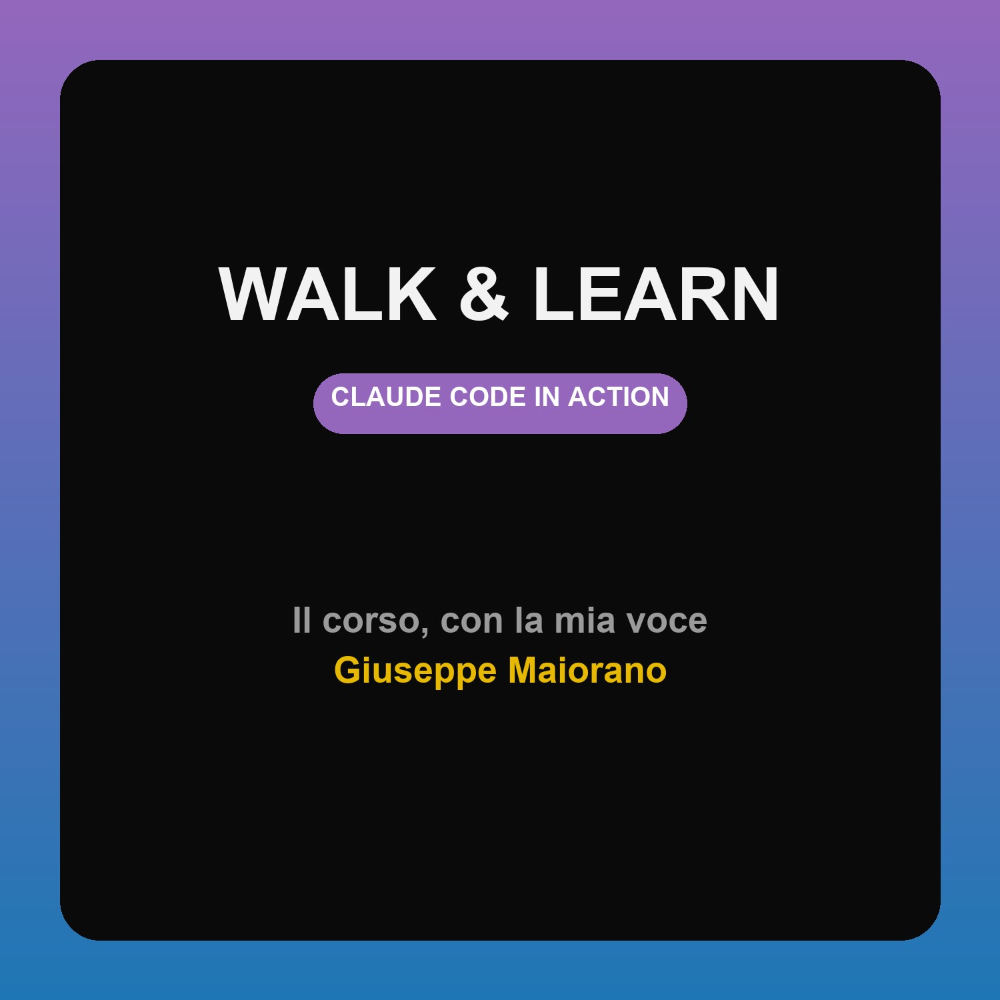

Il corso Anthropic, con la mia voce. 15 lezioni.
Copia e usa "Aggiungi programma via URL" in Pocket Casts/Overcast/Apple Podcasts (Mac).
https://maiorang.github.io/walk-and-learn/cca/podcast.xmlVelocità regolabile nell'app. Pause già nell'audio.